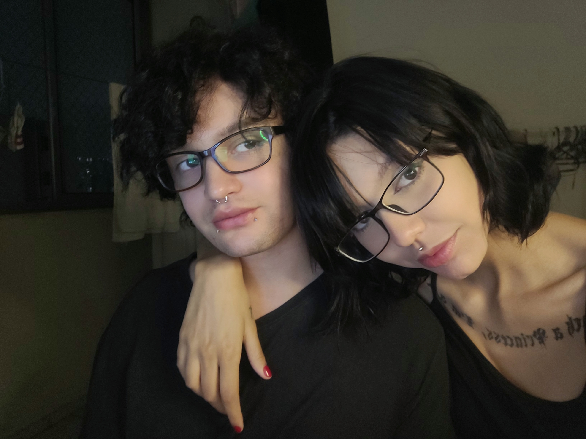

❤️
Já fazem:
dias
semanas
anos! 💘
Já fazem:
dias
semanas
anos! 💘
O que sinto por você vai muito além do físico ou do mero romance.
Eu amo você e sua alma, profundamente. Escolhi — e escolheria — te amar todos os dias da minha existência.
Quero passar meus melhores e piores dias ao seu lado, e mesmo os piores se tornam suportáveis contigo.
Quero viver todas as fases contigo (e algumas já vivemos): a adolescência, os erros e acertos, a maternidade e paternidade, as primeiras vezes, o sucesso profissional...
Até que tudo isso passe, os filhos saiam de casa, e só reste nós dois novamente.
Até chegarem os dias mais tranquilos, assistindo jornal na TV e fazendo pão caseiro na cozinha.
Até o silêncio profundo da velhice, quando eu segurar sua mão e souber que tudo valeu a pena.
E eu vou te amar até depois da vida.